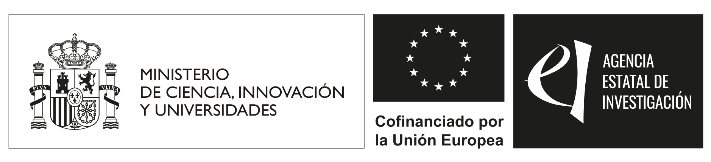
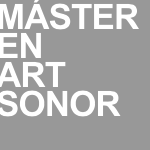

<!DOCTYPE html>
<html lang="en">
<head>
	<meta charset="utf-8" />
	<meta name="viewport" content="width=device-width, initial-scale=1, shrink-to-fit=no" />

	<title>About</title>

	<meta property="og:title" content="ICLC 2025 - About" />
    <meta property="og:type" content="website" />
    <meta property="og:url" content="https://iclc.toplap.org/2025/about.html" />
	<meta property="og:description" content="International Conference on Live Coding 2025, May 27 - 31, Barcelona" />
	
    <meta property="og:image" content="./assets/img/2025logocolor.png" />
    <meta property="og:image:type" content="image/png" />
    <meta property="og:image:width" content="1200" />
    <meta property="og:image:height" content="630" />

    <meta property="og:locale" content="en_US" />   

	<link href="https://fonts.googleapis.com/css2?family=Exo:ital,wght@0,400;0,500;0,700;1,400;1,700&amp;display=swap" rel="stylesheet">
	
	<!-- Font Awesome icons (free version)-->
	<script src="https://use.fontawesome.com/releases/v6.1.0/js/all.js" crossorigin="anonymous"></script>

	<!-- Core theme CSS (includes Bootstrap)-->
	<link href="css/styles.css" rel="stylesheet" />
</head>
<body id="page-top">
	<!-- Generate the main menu bar -->
	<script src="./js/scripts-extension.js?cachebust=1020019"></script>
	<script>makeMenuCat();</script>

	<section class="about-section" id="about"></section>
	<br><br><br><br>
	<script>
		// add a paragraph, arguments: section-id, header, text

		

		paragraph('about', 'Sobre nosaltres',
			  `La International Conference on Live Coding (ICLC) està dedicada a pràctiques i investigacions centrades en tecnologies i filosofies que interpreten l'ús del codi informàtic com a gest en el context de les actuacions en directe. En les seves edicions anteriors, la comunitat ha ofert informació important sobre aquesta pràctica des de moltes perspectives diverses &ndash; tècnica, filosòfica, educativa, política i més.<br><br>
L'ICLC 2025 va tener lloc a Barcelona del 27 al 31 de maig de 2025, uns deu anys després del primer ICLC del 2015. Animem la nostra comunitat a aprofitar els seus punts forts multidisciplinaris i descobrir nous límits per expandir-se o dissoldre's.
        `);

		paragraph('about', 'Qui som', 
		`L'edició del 2025 de l'ICLC està organitzada per membres de la comunitat local de codificació en directe de Barcelona (la gran majoria dels quals són voluntaris) i convidats d'altres comunitats i institucions de codificació en directe d'arreu del món.</p>

        <p><strong>Socis organitzadors:</strong> <a href="https://www.toplap.cat/">TOPLAP Barcelona</a>, and <a href="https://axolot.cat/">Axolot Collective</a></p>

        <p><strong>Soci institucional:</strong> <a href="https://www.uoc.edu/">Universitat Oberta de Catalunya (UOC)</a></p>

        <p><strong>Lloc: Barcelona, Catalunya</strong></p>
		
        <!-- <p>Live coding performances during ICLC 2025 will take place at a diverse selection of venues around Barcelona. Please check our <a href="/venues.html">Venues</a> page.-->`);


		paragraph('about', "ICLC 2025 Comitè de Programació",
		`
		<br>
			<strong>General Chair</strong>
			<ul style="margin-top: 10px;">
				<li>Enric Mor &ndash; Universitat Oberta de Catalunya (UOC)</li>
			</ul>
<br>
			<strong>Papers Committee</strong>
			<ul style="margin-top: 10px;">
				<li>Julia Múgica Gallart (chair) &ndash; TOPLAP Barcelona / Axolot.cat</li>
				<li>Enric Mor &ndash; Universitat Oberta de Catalunya (UOC)</li>
				<li>Anna Xambó &ndash; Queen Mary University of London</li>
				<li>Hernani Villaseñor-Ramírez &ndash; UAM Lerma</li>
				<li>Gerard Roma &ndash; University of West London</li>
				<li>Iván Paz &ndash; TOPLAP Barcelona</li>
				<li>Niklas Reppel &ndash; TOPLAP Barcelona</li>
			</ul>
<br>
			<strong>Performance Committee</strong>
			<ul style="margin-top: 10px;">
				<li>Citlali Hernández (co-chair) &ndash; TOPLAP Barcelona / UOC / Axolot.cat</li>
				<li>Glen Fraser (co-chair) &ndash; TOPLAP Barcelona</li>
				<li>Jia Liu &ndash; University of Music Karlsruhe / TOPLAP Karlsruhe</li>
				<li>Lina Bautista &ndash; TOPLAP Barcelona / Axolot.cat</li>
    			<li>Irma Vilà &ndash; Universitat Oberta de Catalunya (UOC)</li>
    			<li>Ramón Casamajó &ndash; TOPLAP Barcelona</li>
			</ul>
<br>
			<strong>Workshop Committee</strong>
			<ul style="margin-top: 10px;">
				<li>Bernat Romagosa (chair) &ndash; TOPLAP Barcelona / SAP</li>
				<li>Alfonso Pardo &ndash; TOPLAP Barcelona</li>
				<li>Joan Queralt &ndash; TOPLAP Barcelona</li>
				<li>Maia Francisco &ndash; TOPLAP Barcelona</li>
				<li>Mònica Moreno &ndash; TOPLAP Barcelona</li>
				<li>Roger Pibernat &ndash; TOPLAP Barcelona / Axolot.cat</li>
				<li>Florencia Alonso &ndash; Robert Schumann Hochschule</li>
			</ul>
<br>
			<strong>Installation Committee</strong>
			<ul style="margin-top: 10px;">
				<li>Irma Vilà (co-chair) &ndash; UOC</li>
				<li>Roger Pibernat (co-chair) &ndash; TOPLAP Barcelona / Axolot.cat</li>
    			<li>Enric Mor - TOPLAP Barcelona / UOC</li>
			</ul>
<br>
			<strong>Satellite Events Coordinator</strong>
			<ul style="margin-top: 10px;">
				<li>Alfonso Pardo &ndash; TOPLAP Barcelona</li>
			</ul>
			<br>
			<strong>Communication</strong>
			<ul style="margin-top: 10px;">
				<li>Alicia Champlin &ndash; TOPLAP Barcelona</li>
			</ul>
			<br>
			<strong>Web Support</strong>
			<ul style="margin-top: 10px;">
				<li>Diego Villaseñor &ndash; Planeta tierra</li>
			</ul>
<br>
                        <strong>Proceedings Editors</strong>
			<ul style="margin-top: 10px;">
				<li>Niklas Reppel &ndash; TOPLAP Barcelona</li>
                                <li>Iván Paz &ndash; TOPLAP Barcelona</li>
                                <li>Christopher Taudt (Volunteer)</li>
			</ul>
			<br>
			<strong>Graphic Design</strong>
			<ul style="margin-top: 10px;">
				<li>Toni Jaume &ndash; TOPLAP Barcelona</li>
			</ul>

		
		`
		)

		paragraph('about', 'Code of Conduct', `S'espera que tots els participants llegeixin i compleixin el <a href="safety-protocol.html">Protocol de seguretat de l'ICLC 2025</a>, no només a la conferència, sinó també en tots els actes i interaccions relacionades amb la comunitat de l'ICLC, en línia o en persona.`);

		paragraph('about', 'Declaració ambiental', 
		`Convidem a tothom a reflexionar sobre l'impacte que la nostra recerca i pràctica tenen en el nostre medi ambient i ecosistemes. Reconeixent això, incorporem criteris de sostenibilitat i conservació com a directrius per a la planificació de la conferència. Convidem a tothom a tenir-ho en compte abans i després de la conferència. Amb l'esperit de reunir-nos per a un esdeveniment en directe, volem fomentar l'assistència presencial i també animar els assistents a prendre decisions per minimitzar l'impacte dels seus viatges amb opcions baixes en carboni sempre que sigui possible. També ens comprometem a fomentar les connexions entre els assistents i els esdeveniments satèl·lit propers, per aprofitar al màxim els viatges de llarga distància amb oportunitats per convertir la vostra visita en un mini-tour. Les presentacions i actuacions de la conferència es retransmetran en directe sempre que sigui possible. També estem oberts a organitzar presentacions remotes quan aquesta sigui la millor opció.`)

		paragraph('about', 'Organitzat per',
		`<br>
		<a href="https://www.toplap.cat"></a>
		<a href="https://www.uoc.edu/"></a>
		<a href="https://axolot.cat/"></a>
		
		<br>
		`
		);

		
		 paragraph('about', 'Amb el suport de',
		`<br>
		
		
		<br><br>
		`
		);

		 paragraph('about', 'Gràcies a',
		`<br>
		<a href="https://www.ub.edu/masterartsonor_temp/en/master-studies-in-sound-art/"></a>
		
		<br><br>
		`
		);

			
	

	</script>

	<script>
		socials();
		footer();
	</script>

	<!-- Bootstrap core JS-->
	<script src="https://cdn.jsdelivr.net/npm/bootstrap@5.1.3/dist/js/bootstrap.bundle.min.js"></script>
	<!-- Core theme JS-->
	<script src="js/scripts.js"></script>
	<!-- <script src="https://cdn.startbootstrap.com/sb-forms-latest.js"></script> -->
</body>
</html>
